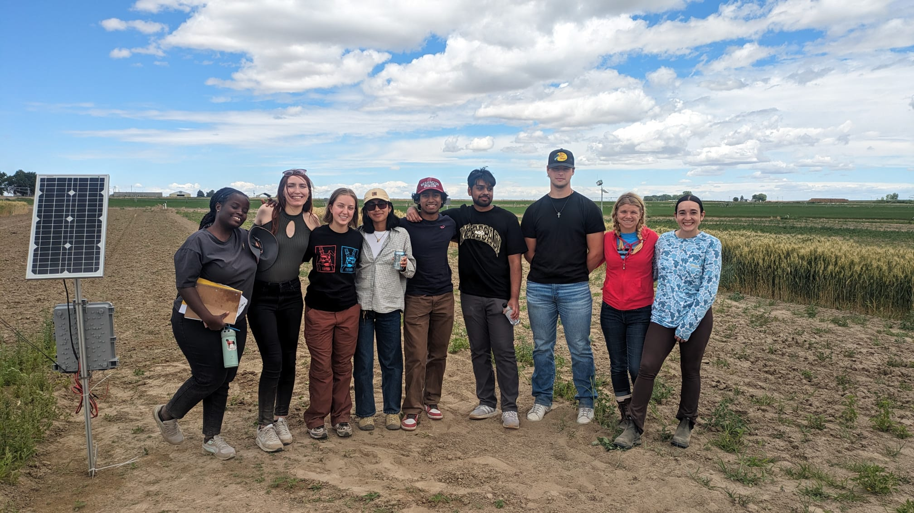
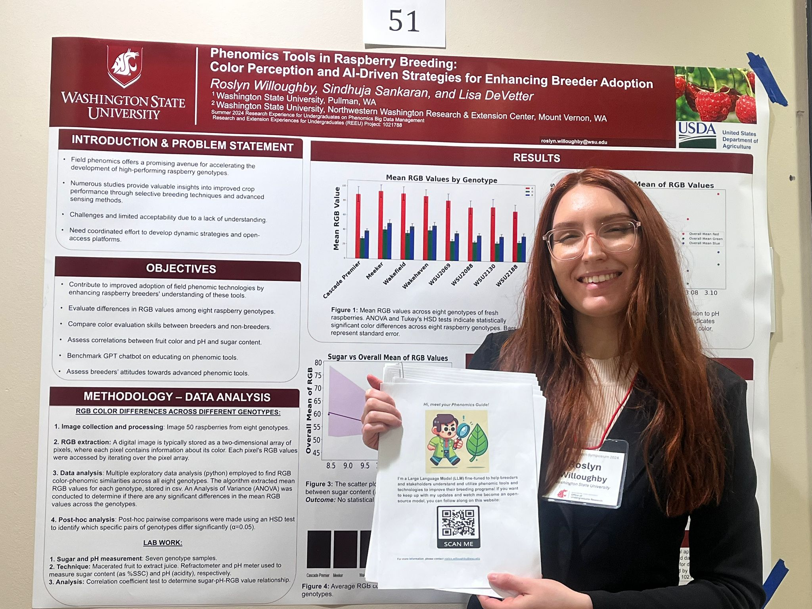

- Please find my current resume here.
Bio
Hi, I’m Roslyn! I’m a senior at Washington State University, majoring in Data Science in Psychology with a Sociology minor. I’m passionate about exploring how data shapes our understanding of human behavior. Some of my research interests include:
- Statistical modeling
- Using machine learning to solve problems in psychology, agriculture, and other domains
- Uncovering patterns for better data-driven decisions
News
- [Aug 24] - Presented my work titled "Phenomics Tools in Raspberry Breeding: Color Perception and AI-Driven Strategies for Enhancing Breeder Adoption" with 70 other research interns. Thankful to Prof. Lisa DeVetter and Prof. Sindhuja for the opportunity. [POSTER]
- [July 24] Thrilled to be a part of the team to teach programming and embedded systems to young native american students at Washington State University. [LINK]
- [June 10] - I am thankful to Washington State University for recognizing me on the President's Honor Roll for 2024.
- [April 24] - Received a Data Science internship offer through WSU! Excited to contribute to the Phenomics Lab.
- [Dec 23] - Got the 2023 McCroskey Scholar Award at Washington State University!

Potato Field Day with other Data Science Interns, Othello, WA

Poster Presentation with results demonstration at Pullman, WA. Discussed with multiple stakeholders in the field.
Projects
Research
Currently I am exploring the synergies between psychology and data analytics around social networks and information exchange.
Coding Neural Networks from scratch
Skills: Numpy, Pandas
Contact 
You can also get in touch with me via email (roslyn.willoughby@wsu.edu)